SPL SECURITY SOLUTIONS
Blog
All articles
65 articles and a holiday security guide on locks, security systems, CCTV, safes and door hardware, newest first.
 Holiday Security Tips for Homes and BusinessesGoing away or closing for the holidays? Practical security tips for homes and businesses across the Gold Coast, Brisbane and Northern NSW from SPL.
Holiday Security Tips for Homes and BusinessesGoing away or closing for the holidays? Practical security tips for homes and businesses across the Gold Coast, Brisbane and Northern NSW from SPL.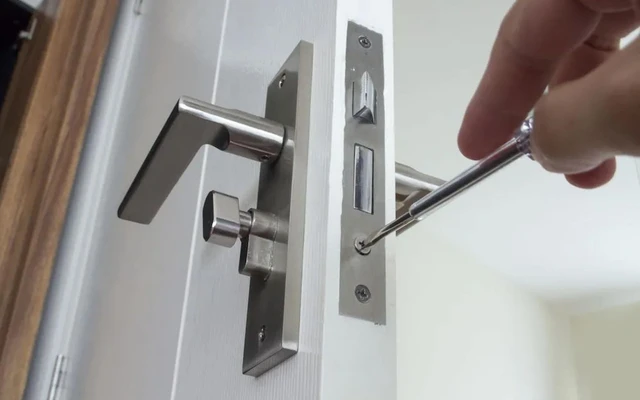
How On-Site Security Support Reduces Stress In Urgent SituationsDiscover how on-site security support helps Gold Coast businesses manage urgent incidents, secure access points and make calmer security decisions.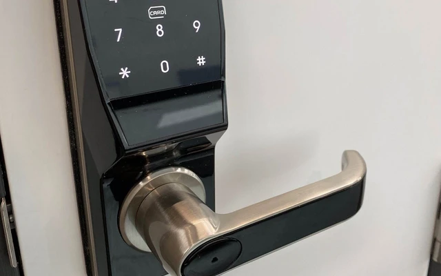
Common Mistakes People Make When Searching For A LocksmithAvoid common mistakes when choosing a locksmith and learn what to check before booking. Find a trusted locksmith near me and get help today.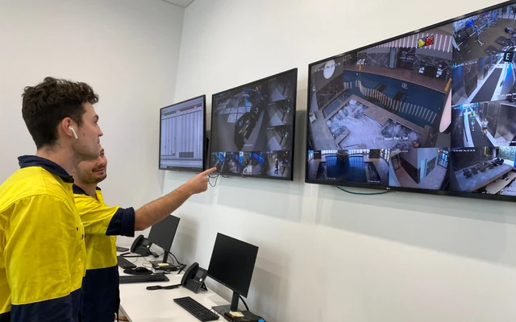
How Security Impacts Workplace Safety CompliancePhysical security and WHS are more connected than most businesses realise. Here is how a commercial locksmith on the Gold Coast can support compliance…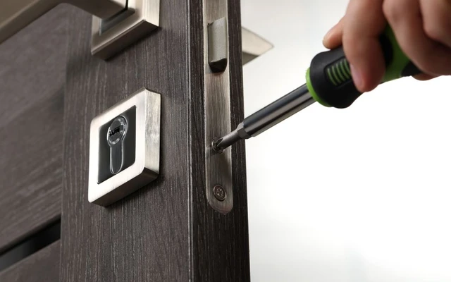
Understanding Risk Exposure in Commercial PropertiesUnderstand how to identify and reduce property risks with insights from a commercial locksmith on the Gold Coast. Read the guide today.- The Importance Of Long-Term Security Planning In BrisbaneLearn why long-term security planning matters with a trusted commercial locksmith in Brisbane. Protect your business; contact us today.
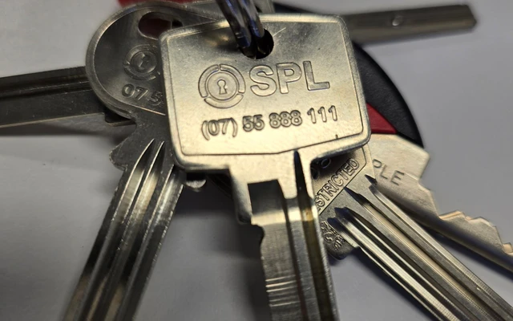
5 Signs Your Business Needs a Commercial Locksmith UpgradeRunning a business means juggling a hundred priorities at once: staff, stock, schedules and customers all competing for your attention. Security fades into...- Why Gold Coast Businesses Need A Professional Commercial LocksmithLearn why hiring a commercial locksmith on the Gold Coast helps protect business premises, improve security and manage access control.
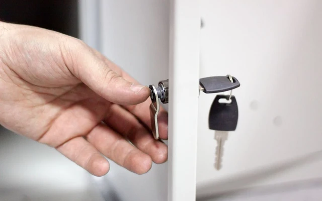
Why Brisbane Businesses Need A Professional Commercial LocksmithStrengthen security with a commercial locksmith in Brisbane who handles complex lock systems, access control and emergency support. Contact Us.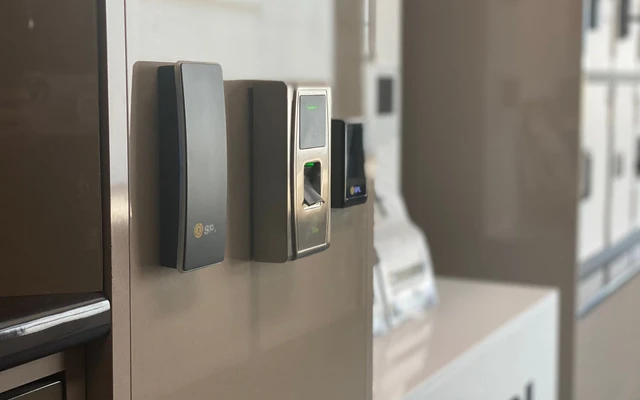
Keyless Entry Systems: Are They Right For Your Business?Explore benefits and costs of keyless entry for businesses. Work with a commercial locksmith in Gold Coast. Secure smarter access control today.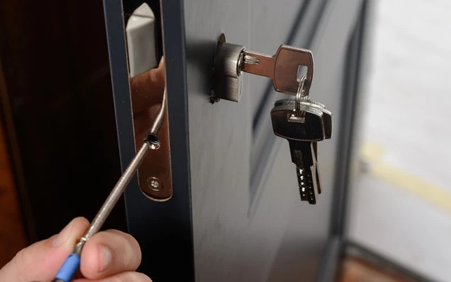
What Sets a Master Locksmith Apart from a Standard Locksmith?Learn what makes Master Locksmiths different from standard locksmiths. Ensure expert security for your property and call today for trusted service.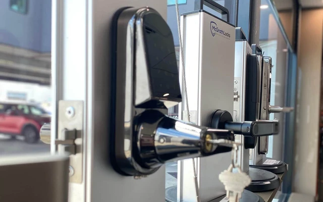
Repair vs Replacement: What to Do When a Lock FailsLearn how a locksmith gold coast can help when a lock fails. Discover whether repair or replacement is best for your security. Call now for expert help.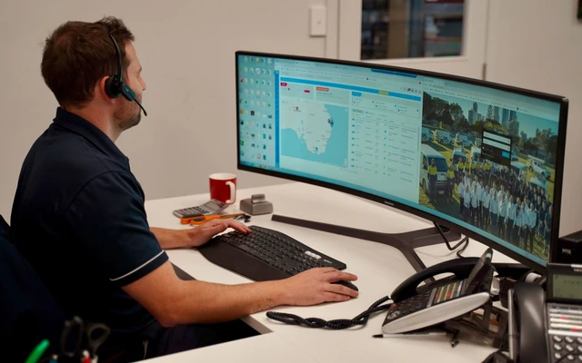
Why Quick Response Times Are Critical for Emergency Locksmith ServicesLearn why fast response is vital for emergency locksmith services. Discover how delays can impact safety and what affects a locksmith’s arrival time.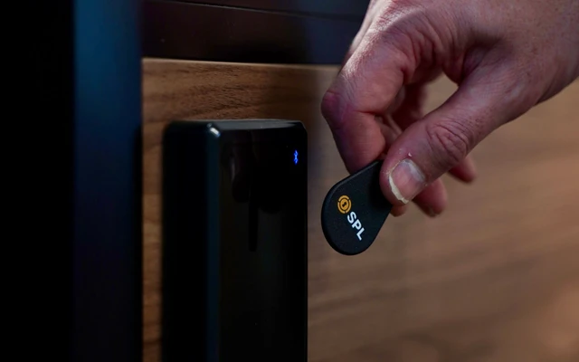
Steps To Take When Your Digital Door Lock Battery DiesLocked out by a dead smart lock? Discover safe steps to regain access & prevent battery issues. Read our guide to digital lock recovery today!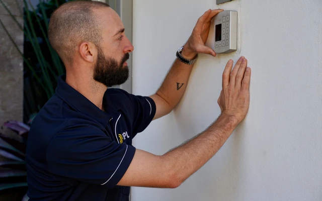
How to Protect Your Home from Intruders EffectivelyLearn effective tips on how to protect your home from intruders effectively. Protect your property with trusted home security systems on the Gold Coast.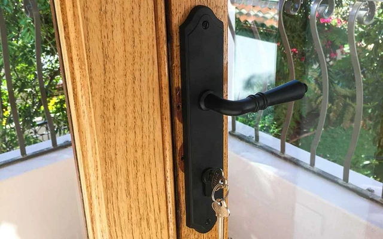
When Should You Consider Changing The Locks After Buying A New House?Learn when to change locks after buying a house. Trust our experts and reliable residential locksmiths in Gold Coast for your home security.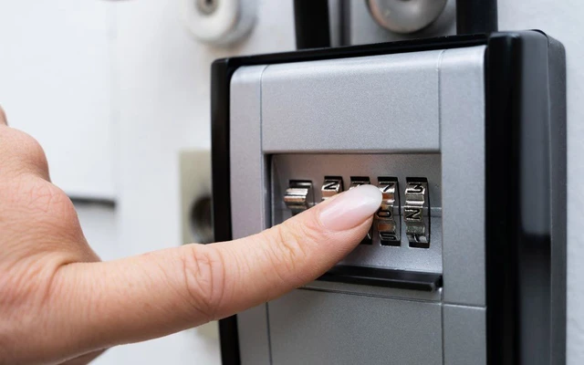
Why Investing in a Home Security System is CrucialAre you confident your home is as secure as it should be? Here are the top reasons why investing in a home security system is crucial. Read more to learn more!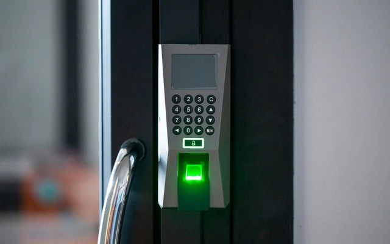
How to Choose the Best Smart Home Security System for Your NeedsDiscover the perfect smart home security system for you with our expert guide. Secure your home today—click to find your ideal solution!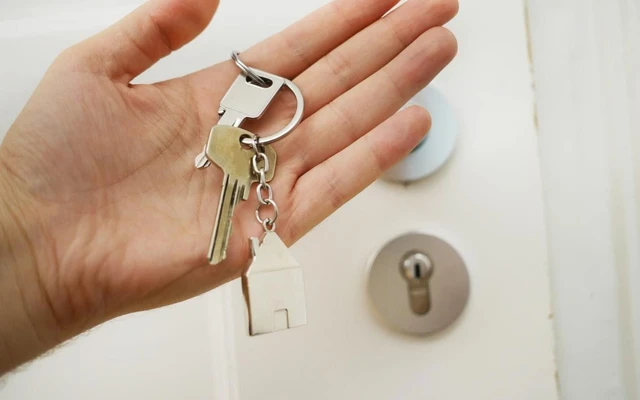
What To Expect When You Call An Emergency LocksmithKnow what to expect from a 24/7 mobile locksmith. Get quick, reliable help when locked out. Be prepared for any situation. Read on to learn more.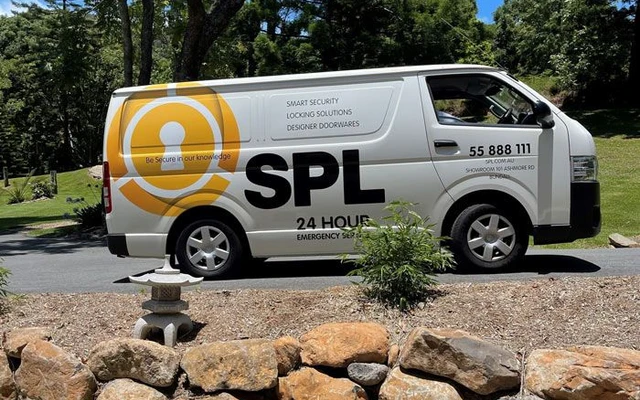
The Benefits Of Using Mobile Locksmiths For Emergency SituationsDiscover the advantages of mobile locksmiths in emergency situations on the Gold Coast. Contact us for fast and reliable locksmith services!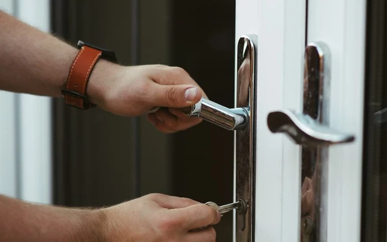
How To Choose The Best Locksmith For Your NeedsFind reliable locksmiths with our expert tips. Ensure your safety and get the best service for your needs. Read now to make an informed choice. Home Security For Renters: 5 Practical Solutions For Non-Permanent Living SpacesWith break-ins and property crimes on the rise, a home security system is a must-have for protecting your property and your peace of mind. Read more!
Home Security For Renters: 5 Practical Solutions For Non-Permanent Living SpacesWith break-ins and property crimes on the rise, a home security system is a must-have for protecting your property and your peace of mind. Read more!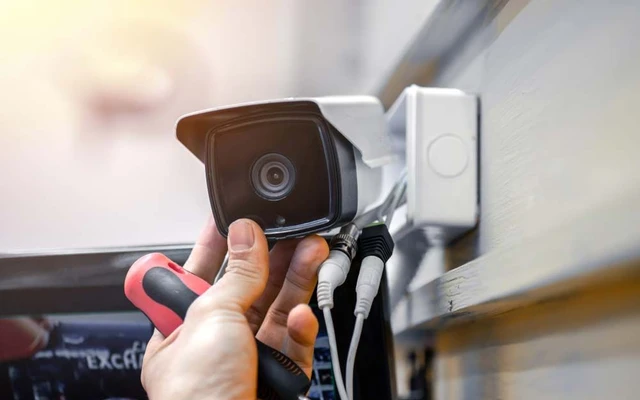
The Importance Of Professional Lock Installation For Your Home Or BusinessLearn the importance of expert lock installation for enhanced security in your home or business. Call a professional locksmith for maximum protection.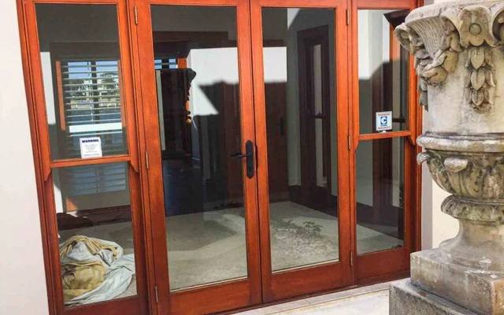
Why Replace Your Door Seals?The door seal is an underappreciated component of doors. It plays a significant role in your home's overall comfort, energy efficiency and security.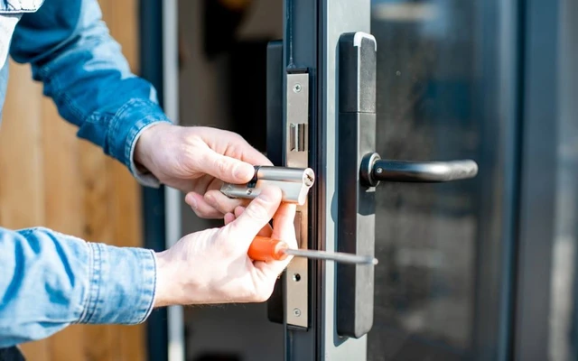
When Should I Call An Emergency Locksmith?Need an emergency locksmith? Learn when to call one and how to handle lockout situations effectively. Keep your property secure!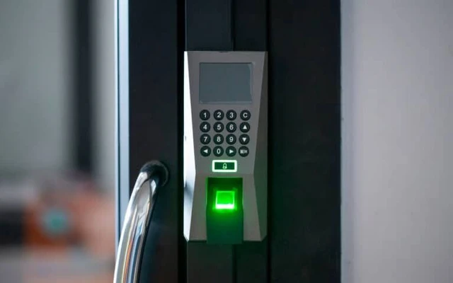
Locksmith Insights: Commercial Security Systems For 2024Stay secure in 2024! Explore cutting-edge commercial security systems with our expert insights. Trust us for modern business protection. Keep reading!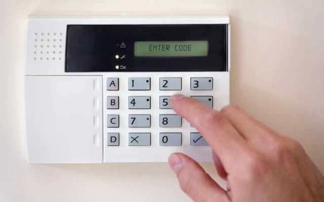
Types Of Security Systems For Homes And BusinessesIn this blog post, explore effective security systems for your Gold Coast home or office. Enhance safety and gain peace of mind. Secure your space today!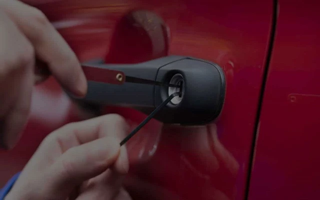
All You Need to Know About Car Key CuttingLearn everything about car key cutting, from methods to prices. Ready to get started? Read on to find out more!- How To Install An Effective Home Security SystemInstalling an effective home security system is important. In this blog, we'll give you the steps to installing an effective security system for your home.
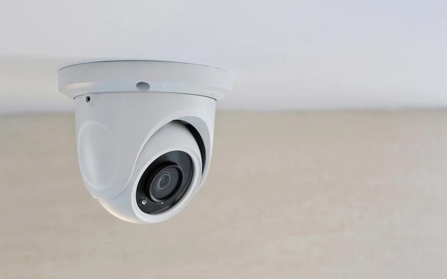
Why Does My Security Camera Keep Going Offline?Security cameras provide an extra layer of protection for homes and businesses. Let's find out in this blog, why a security camera frequently goes offline.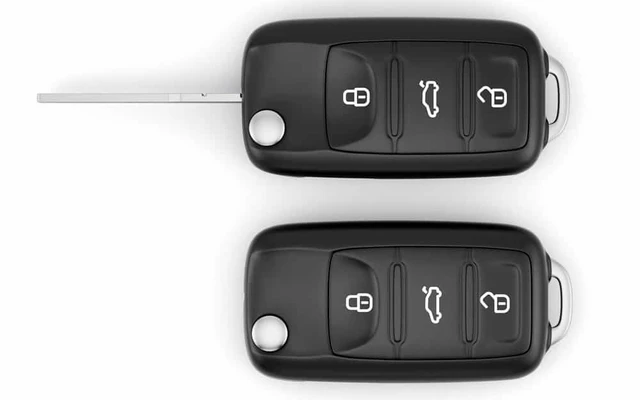
Can Electronic Car Keys Be Reprogrammed?In this blog post, we’ll discuss whether electronic car keys can be reprogrammed and what you need to know about the process. Read on to learn more.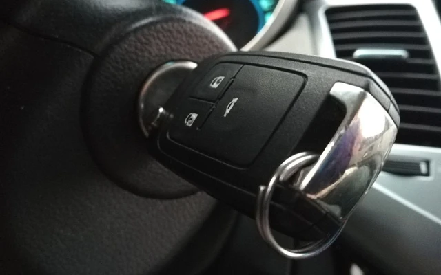
Do You Need A New Key When Replacing An Ignition Switch?In this blog, we will discuss in more detail the factors to consider when replacing an ignition switch and whether or not a new key is necessary. Keep reading!- Reasons To Re-Key Your Home Or BusinessRe-keying your home or business is a great way to add extra security without having to install new locks. Read on to learn more give us a call on (07) 55 888…
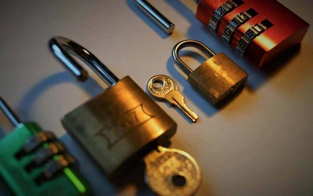
Tips & Importance Of Maintaining Your LocksIf you're wondering how to maintain your locks and what sort of signs to look out for, check this blog or call our team at (07) 55 888 111 to learn more.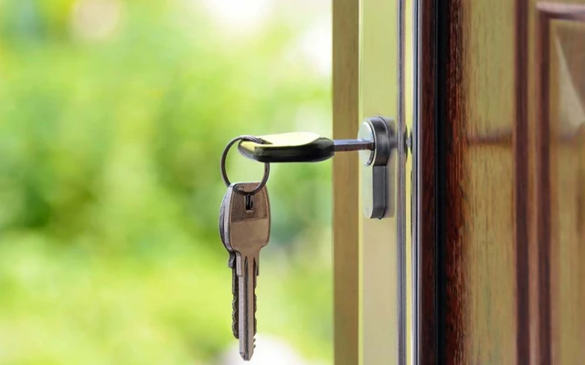
Should You Change The Locks When You Buy A House?Here at SPL Security, we have a knowledgeable team of individuals who know what is best for your door. Give our locksmith team a call today to learn more.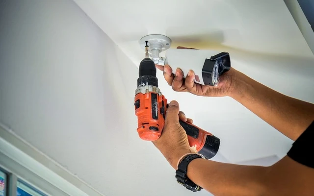
Does Installing Security Cameras Lower Home Insurance?Insurance policies, can be pricey, but there are great ways you can reduce your costs without compromising the safety of your home. Read on to find out.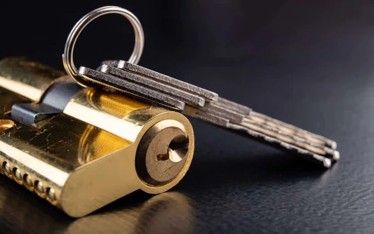
What Does Re-key a Lock Mean?Have you heard about re-key but don't know what it is? Check this blog to have a closer look at what re-keying is and when it's needed or call us to know more.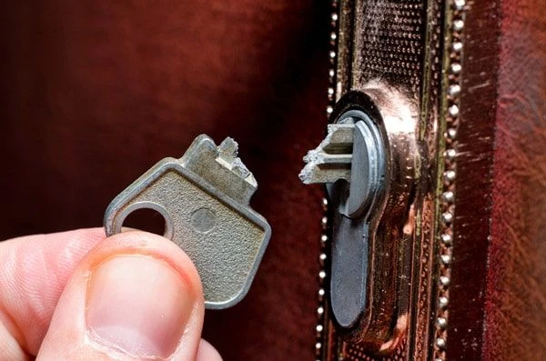
How To Get A Broken Key Out Of A LockHere are some of the things that you can use to get a broken key out of a lock. Get in touch with SPL Security Solutions to learn more.- Expert Tips To Feel Safe in Your HomeWe want you to feel safe and secure, there’s nothing more important than feeling safe in your home, so how can we help you? Do you have a safe in your home?…
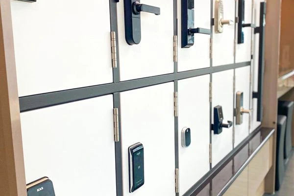
How much does a locksmith cost?What does a locksmith cost? Prices vary with the job, the lock and the time of day. Learn the factors, then call SPL on (07) 55 888 111 for a quote.- How to design your home with fire safety in mindIf you’re building or renovating, the list of planning can seem endless. Along with hiring contractors, choosing paint colours and keeping to a budget, one…
- New Year Lockdown Security Measures – What You Should Know!Out of all of the suburbs in Queensland, the Gold Coast has been named the second-worst region for home invasions. The suburbs at the top of the list are…
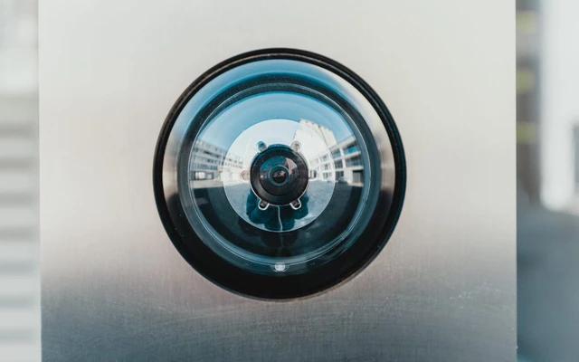
How much does a home security system cost?Having a home security system is integral in protecting your family and belongings. Learn what affects the cost, and call SPL for a quote.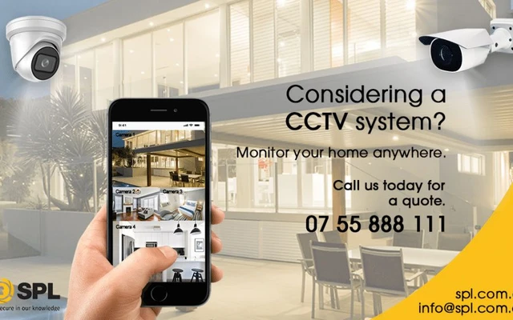
How to secure your home without an alarmWhen you’re out and about, you want peace of mind that you’ll return to your home as you left it – with its contents safe and- Today’s Smart Home Security Systems: Which Is Best for you?Over the years there has been greater interest in home security. The reasons for this are rising crime rates and people’s willingness to take steps to…
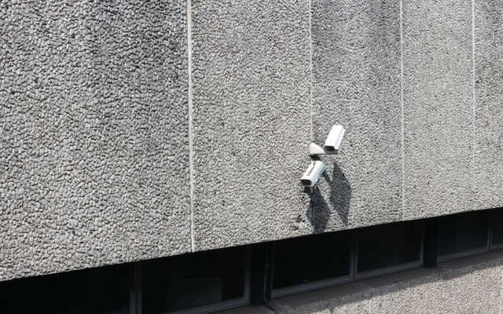
Wired Vs. Wireless Security Cameras: Which One Suits Your NeedsAny homeowner is concerned about home security and protection. You want your family to be safe and your home secure. Even if you live in the safest area of…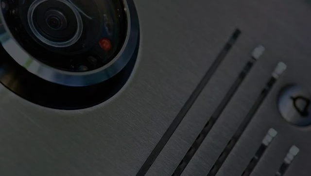
Why You Need A Home Security System ASAPIt is a total no-brainer that your home should be the place in the world where you feel most safe and most secure. For the most part, this can be achieved…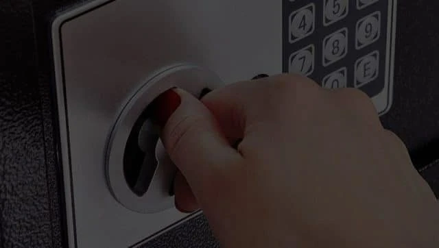
What To Consider When Purchasing a SafePurchasing a safe is a worthy investment for homeowners and business owners alike. Whether you’re storing cash, jewellery or sentimental treasures, a safe…- How Security Cameras Protect Your Business And HomeAre there honestly any modern scenarios where security cameras are not a good thing? Unless you are doing something boneheaded, like recording yourself…
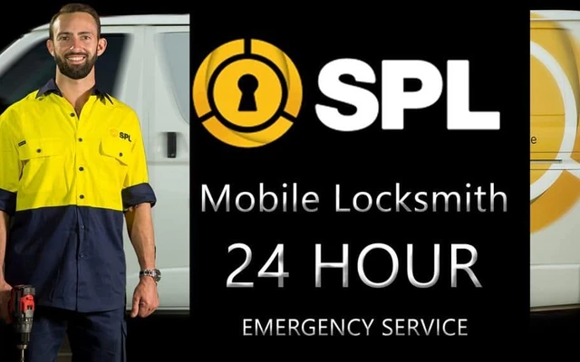
Top Reasons People Need An Emergency LocksmithDoes this sound familiar to you? The night is dark and rainy. You’re ready to spend quality time with your pillow. You reach for your keys. Nothing… Emergency…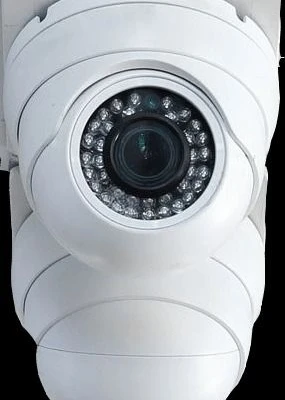
3 Must Have Home Security System FeaturesOnce upon it was something that was only used by the rich and famous, but these days home security systems are used up and down the country in all kinds of…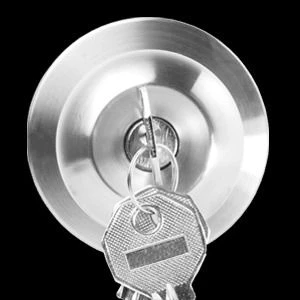
How Home Security Systems Can Help Save On InsuranceInstalling a security system in your home has a range of benefits. One of those benefits that you may not have considered is that it can help you save money…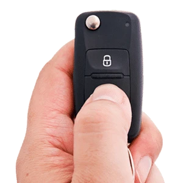
Reasons Your Car Key Isn’t WorkingSometimes it isn’t your day, and everything seems to go wrong. Then, just as you are about to leave the house and go to work or go to the shops, you suddenly…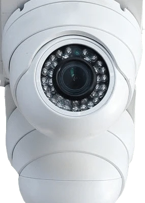
Surveillance Cameras Are HelpingIn what seems like an ever more dangerous world, property owners are often glad of any help they can get. Protecting against crime or accidents is something…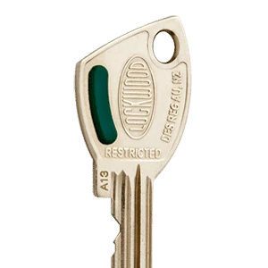
When You’ve Lost Your Keys – Who Do You Call?We’ve all done it. Probably the blokes at the Tower of London have lost their keys at some point. A lot of the time it’s when you’ve put them somewhere…- 24/7 Gold Coast Locksmith Secrets To Our SuccessWhen you call SPL Security, it’s often because you need help fast. And when you find yourself locked out, you know our mobile locksmith service will get to…
 How Technology Is Changing for LocksmithsBeing a locksmith is traditionally one of the oldest professions in not just Australia but also the world. Although locksmithing may be traditional, the fast…
How Technology Is Changing for LocksmithsBeing a locksmith is traditionally one of the oldest professions in not just Australia but also the world. Although locksmithing may be traditional, the fast…- Security Cameras Do More Than SecurityWhen you know you will be leaving your home or business, whether it is at the end of the working day, to go to work or to go away on holiday you want to be…
- Gift yourself peace of mind this ChristmasSecure your home or business before the Christmas holidays. Call SPL Security Solutions on (07) 55 888 111 for advice.
- Inside the mind of a burglarIs your home secure enough this Christmas? Queensland police recorded 40,088 burglary victims in 2025 (ABS). See what burglars look for when casing a home.
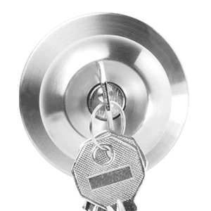
4 Services You Can Expect from Your Local LocksmithSPL Security has a fleet of fully equipped mobile locksmith vans ready to assist you in your time of need, 24/7.- 5 Questions to Consider When Buying a Gun SafeA gun safe (also known as a weapon safe) is a freestanding or anchored fire and/or burglary safe, configured specifically to
 3 Reasons to install a CCTV Security Camera at your Home or BusinessPeople are now beginning to taking more ownership over the protection their families, business and…
3 Reasons to install a CCTV Security Camera at your Home or BusinessPeople are now beginning to taking more ownership over the protection their families, business and…- Top 5 Security Tips for your Home or BusinessThere can be little doubt that the security of any property is very important. With burglars on the Gold Coast becoming more